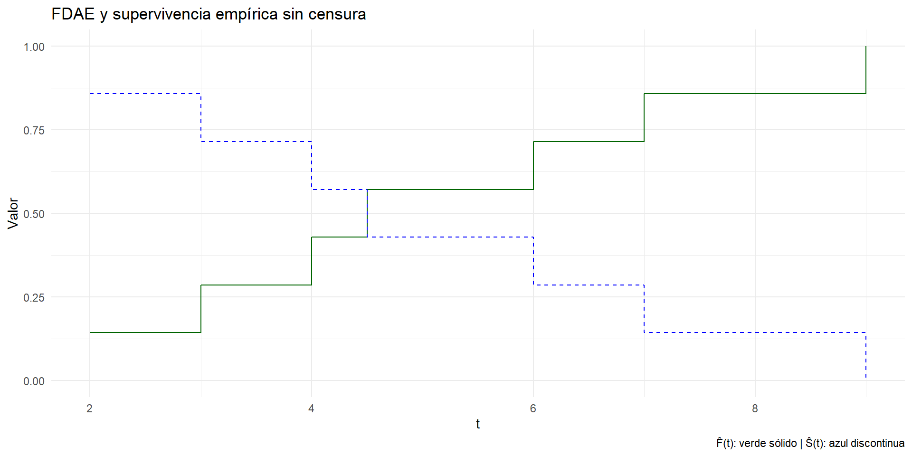
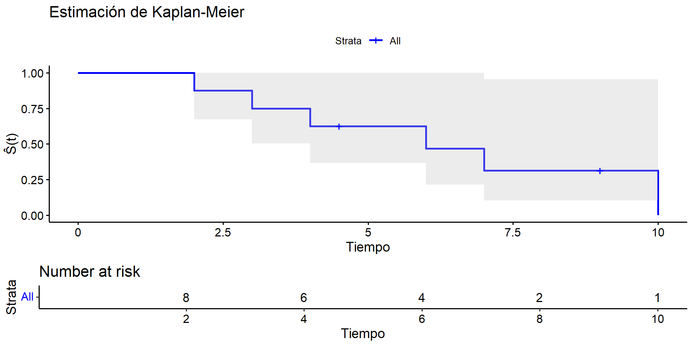
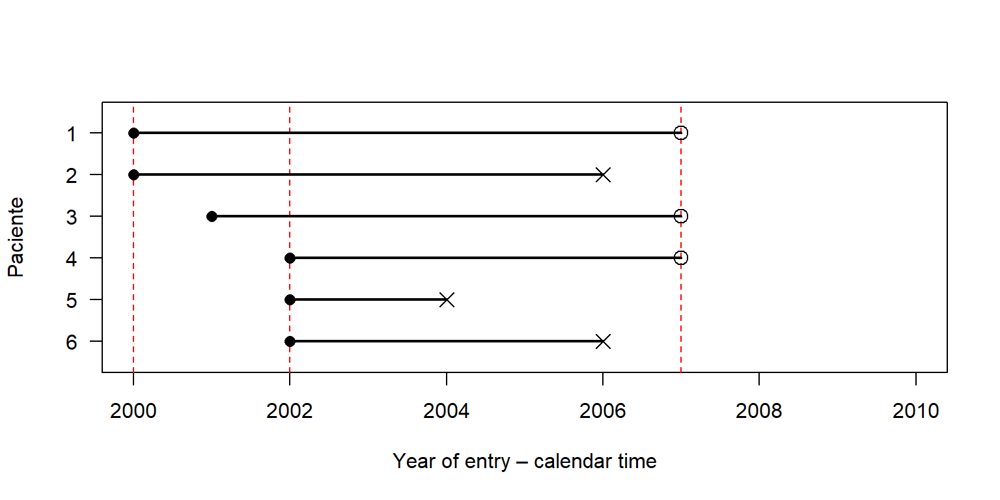
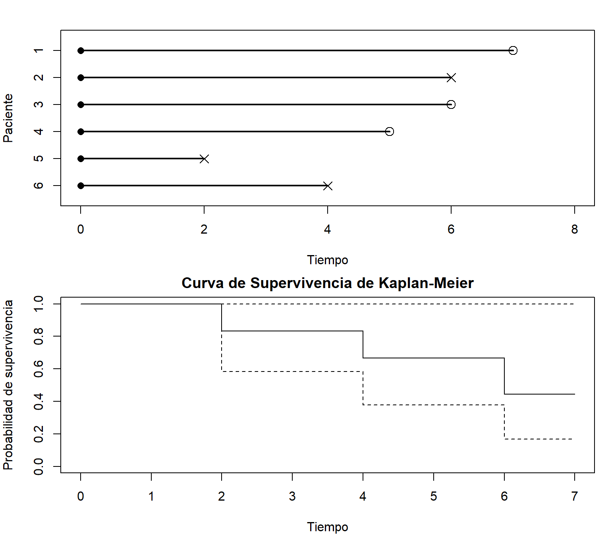
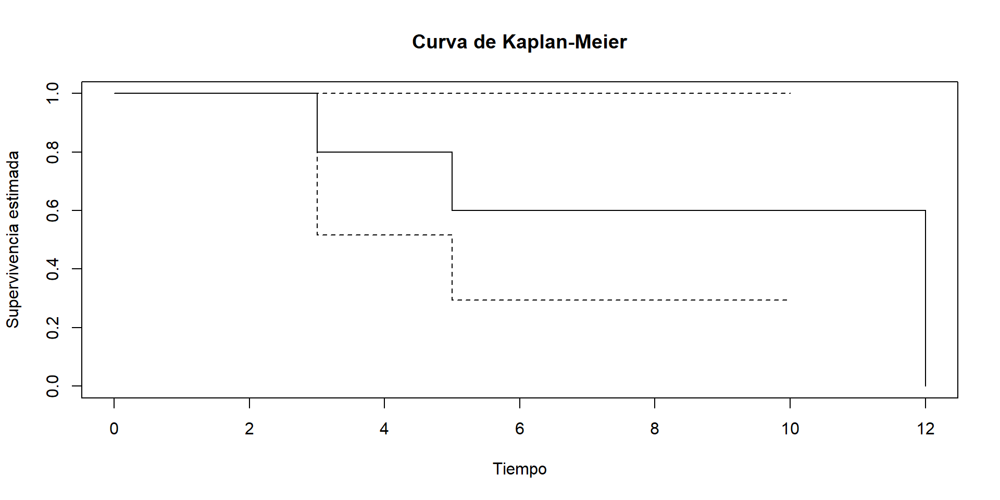
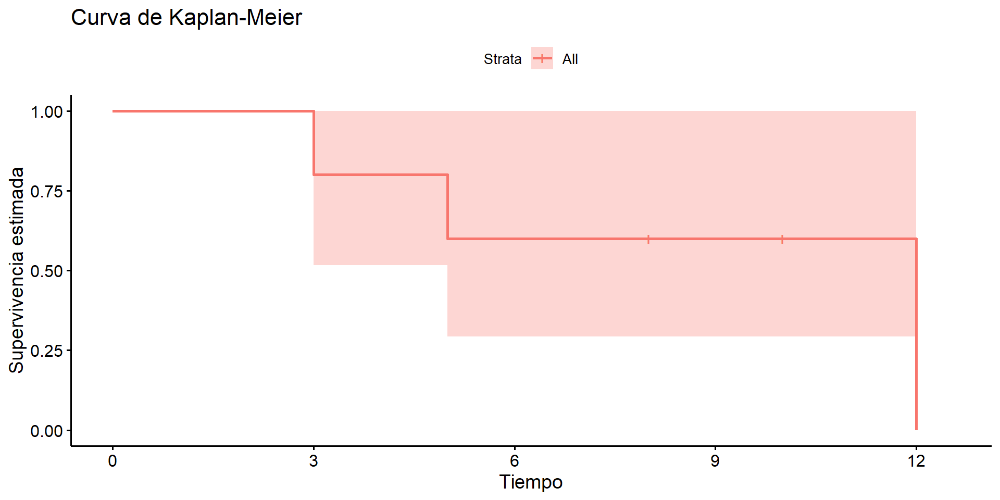
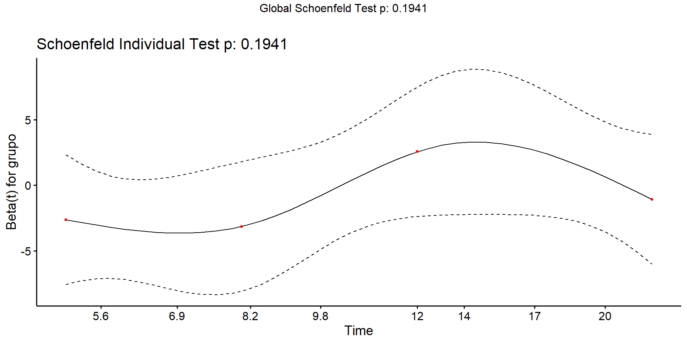

| t | F_hat | S_hat |
|---|---|---|
| 2.0 | 0.1428571 | 0.8571429 |
| 3.0 | 0.2857143 | 0.7142857 |
| 4.0 | 0.4285714 | 0.5714286 |
| 4.5 | 0.5714286 | 0.4285714 |
| 6.0 | 0.7142857 | 0.2857143 |
| 7.0 | 0.8571429 | 0.1428571 |
| 9.0 | 1.0000000 | 0.0000000 |
Análisis de Supervivencia
Estimación no paramétrica
2025-06-01
Estimación no paramétrica
La función de distribución acumulada empírica (FDAE)
Dada una muestra de tiempos de falla sin censura:
\[ \hat{F}(t) = \frac{\#\{T_i \leq t\}}{n} \]
Es un estimador escalonado, que da saltos en cada observación.
La función de supervivencia empírica se define como:
\[ \hat{S}(t) = 1 - \hat{F}(t) \]
Limitación: no puede manejar adecuadamente datos censurados.
Ejemplo en R: FDAE

Estimador de Kaplan-Meier
Cuando hay censura, la FDAE no es válida. Kaplan-Meier estima la función de supervivencia como:
\[ \hat{S}(t) = \prod_{t_i \leq t} \left(1 - \frac{d_i}{n_i} \right) \]
donde:
- \(d_i\): número de eventos en el tiempo \(t_i\)
- \(n_i\): número de individuos en riesgo justo antes de \(t_i\)
Es un estimador escalonado que ajusta el denominador cuando hay censura.
| tiempo | status | FDAE | S_empirica | Kaplan_Meier |
|---|---|---|---|---|
| 2.0 | 1 | 0.1667 | 0.8333 | 0.8750 |
| 3.0 | 1 | 0.3333 | 0.6667 | 0.7500 |
| 4.0 | 1 | 0.5000 | 0.5000 | 0.6250 |
| 4.5 | 0 | 0.5000 | 0.5000 | 0.6250 |
| 6.0 | 1 | 0.6667 | 0.3333 | 0.4688 |
| 7.0 | 1 | 0.8333 | 0.1667 | 0.3125 |
| 9.0 | 0 | 0.8333 | 0.1667 | 0.3125 |
| 10.0 | 1 | 1.0000 | 0.0000 | 0.0000 |
Ejemplo en R: Kaplan-Meier
| ID | tiempo | evento |
|---|---|---|
| Ind 1 | 2.0 | 1 |
| Ind 2 | 3.0 | 1 |
| Ind 3 | 4.0 | 1 |
| Ind 4 | 4.5 | 0 |
| Ind 5 | 6.0 | 1 |
| Ind 6 | 7.0 | 1 |
| Ind 7 | 9.0 | 0 |
| Ind 8 | 10.0 | 1 |

Call: survfit(formula = surv_obj ~ 1, data = datos)
time n.risk n.event survival std.err lower 95% CI upper 95% CI
2 8 1 0.875 0.117 0.673 1.000
3 7 1 0.750 0.153 0.503 1.000
4 6 1 0.625 0.171 0.365 1.000
6 4 1 0.469 0.187 0.215 1.000
7 3 1 0.312 0.178 0.102 0.955
10 1 1 0.000 NaN NA NAComparación conceptual
| Característica | FDAE | Kaplan-Meier |
|---|---|---|
| Usa solo eventos | ✔️ | ✔️ |
| Maneja censura | ❌ | ✔️ |
| Escalonada | ✔️ | ✔️ |
| Basada en conteos simples | ✔️ | ❌ (ajusta denominadores) |
Ejemplo: Ensayo clínico con cáncer
| paciente | entrada | fin | evento |
|---|---|---|---|
| 1 | 2000 | 2007 | 0 |
| 2 | 2000 | 2006 | 1 |
| 3 | 2001 | 2007 | 0 |
| 4 | 2002 | 2007 | 0 |
| 5 | 2002 | 2004 | 1 |
| 6 | 2002 | 2006 | 1 |

Representación gráfica del seguimiento
| paciente | tiempo | status |
|---|---|---|
| 1 | 7 | 0 |
| 2 | 6 | 1 |
| 3 | 6 | 0 |
| 4 | 5 | 0 |
| 5 | 2 | 1 |
| 6 | 4 | 1 |
- Círculo abierto = censura
- X = evento (muerte)

Programación en R
- Librería
survival:
La función Surv() de survival
library(survival)
# Censura derecha
tiempos <- c(5, 8, 12, 3, 10)
evento <- c(1, 0, 1, 1, 0) # 1 = evento, 0 = censurado
datos <- Surv(tiempos, evento)
datos[1] 5 8+ 12 3 10+- Crea un objeto de clase
Surv. - Es la base para ajustar modelos de supervivencia.
Visualizando Surv() con tipos de censura
# Censura izquierda
tiempos <- c(5, 8, 12, 3, 10)
evento <- c(1, 0, 1, 1, 0)
Surv(tiempos, evento, type = "left")[1] 5 8- 12 3 10-# Censura por intervalo
inferior <- c(2, 6, 7, 5, 1)
superior <- c(4, 6, 9, 6, 3)
evento <- c(3, 0, 3, 0, 3) # 3 = intervalo
Surv(inferior, superior, type = "interval2")[1] [2, 4] 6 [7, 9] [5, 6] [1, 3]Ajuste con survfit()
library(survival)
# Datos con censura derecha
tiempos <- c(5, 8, 12, 3, 10)
evento <- c(1, 0, 1, 1, 0)
datos <- Surv(tiempos, evento)
print(datos)[1] 5 8+ 12 3 10+Call: survfit(formula = datos ~ 1)
time n.risk n.event survival std.err lower 95% CI upper 95% CI
3 5 1 0.8 0.179 0.516 1
5 4 1 0.6 0.219 0.293 1
12 1 1 0.0 NaN NA NAsurvfit()ajusta una curva de Kaplan-Meier.
Graficando la curva de supervivencia
Puedes usar ggsurvplot() del paquete
survminerpara una mejor presentación visual.
Conjunto de datos gastricXelox de la biblioteca asaur
Ejercicio
- Usar R para:
- Estimar la curva de supervivencia de
gastricXelox - Obtener la mediana de supervivencia
- Graficar con intervalo de confianza
- Estimar la curva de supervivencia de
Call: survfit(formula = Surv(timeMonths, delta) ~ 1, data = gastricXelox)
time n.risk n.event survival std.err lower 95% CI upper 95% CI
0.926 48 1 0.979 0.0206 0.940 1.000
1.851 47 3 0.917 0.0399 0.842 0.998
2.083 44 1 0.896 0.0441 0.813 0.987
2.545 43 1 0.875 0.0477 0.786 0.974
2.777 42 1 0.854 0.0509 0.760 0.960
3.008 41 1 0.833 0.0538 0.734 0.946
3.702 40 2 0.792 0.0586 0.685 0.915
3.934 38 2 0.750 0.0625 0.637 0.883
4.397 36 1 0.729 0.0641 0.614 0.866
4.860 35 1 0.708 0.0656 0.591 0.849
5.554 34 2 0.667 0.0680 0.546 0.814
5.785 32 1 0.646 0.0690 0.524 0.796
6.479 31 2 0.604 0.0706 0.481 0.760
6.942 29 1 0.583 0.0712 0.459 0.741
8.562 28 2 0.542 0.0719 0.418 0.703
9.719 26 1 0.521 0.0721 0.397 0.683
9.950 25 1 0.500 0.0722 0.377 0.663
10.645 23 1 0.478 0.0722 0.356 0.643
12.264 19 1 0.453 0.0727 0.331 0.620
13.653 16 1 0.425 0.0735 0.303 0.596
13.884 14 1 0.394 0.0742 0.273 0.570
14.810 13 1 0.364 0.0744 0.244 0.544
15.273 12 1 0.334 0.0742 0.216 0.516
17.587 11 1 0.303 0.0734 0.189 0.487
18.050 10 1 0.273 0.0720 0.163 0.458Comparación entre grupos
Note: La p-value corresponde a la prueba log-rank para igualdad de curvas.
Prueba Log-Rank
Call:
survdiff(formula = Surv(tiempo, evento) ~ grupo, data = datos.df)
N Observed Expected (O-E)^2/E (O-E)^2/V
grupo=A 3 2 1.23 0.477 0.825
grupo=B 3 2 2.77 0.212 0.825
Chisq= 0.8 on 1 degrees of freedom, p= 0.4 Salida típica:
N Observed Expected (O-E)^2/E (O-E)^2/V
grupo= A 3 2.0 1.2 0.533 0.60
grupo= B 3 1.0 1.8 0.356 0.60Modelo de riesgos proporcionales de Cox
Call:
coxph(formula = Surv(tiempo, evento) ~ grupo, data = datos.df)
n= 6, number of events= 4
coef exp(coef) se(coef) z Pr(>|z|)
grupoB -1.073 0.342 1.235 -0.869 0.385
exp(coef) exp(-coef) lower .95 upper .95
grupoB 0.342 2.924 0.03036 3.851
Concordance= 0.727 (se = 0.136 )
Likelihood ratio test= 0.81 on 1 df, p=0.4
Wald test = 0.75 on 1 df, p=0.4
Score (logrank) test = 0.83 on 1 df, p=0.4Salida relevante:
coef exp(coef) se(coef) z Pr(>|z|)
grupoB -0.847 0.429 1.155 -0.733 0.463Interpretación: - HR = 0.429 indica que grupo B tiene menor riesgo relativo, pero no es significativo.
Supuestos del modelo de Cox
Note: El test de cox.zph() evalúa el supuesto de proporcionalidad de riesgos.
Actividad práctica guiada
Datos: lung del paquete survival.
Pasos:
- Cargar datos con
data(lung) - Crear objeto
Surv(time, status) - Estimar curvas por
sex - Probar igualdad con log-rank
- Ajustar modelo de Cox con covariables
- Evaluar supuestos
Note: Proporciónales la estructura base y pídeles completar la interpretación.